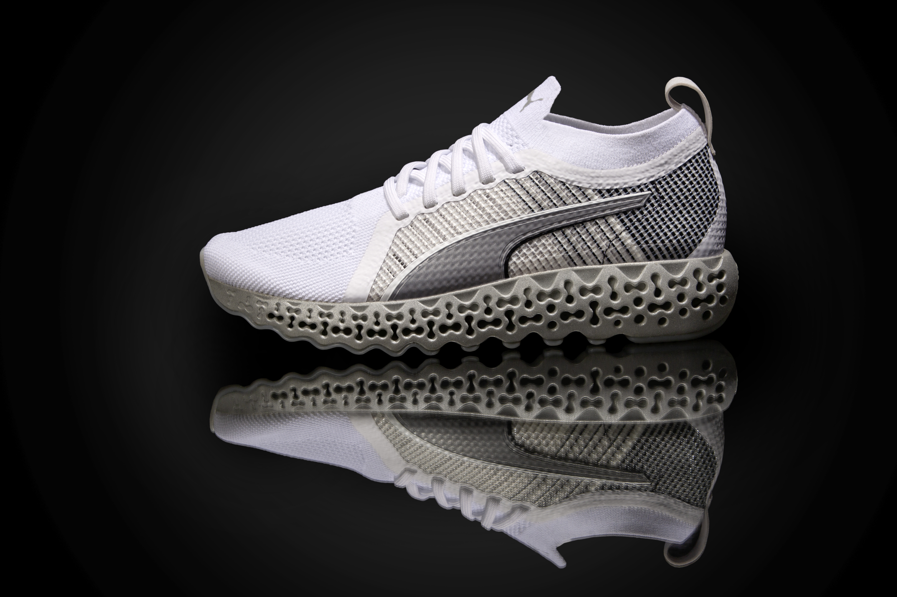
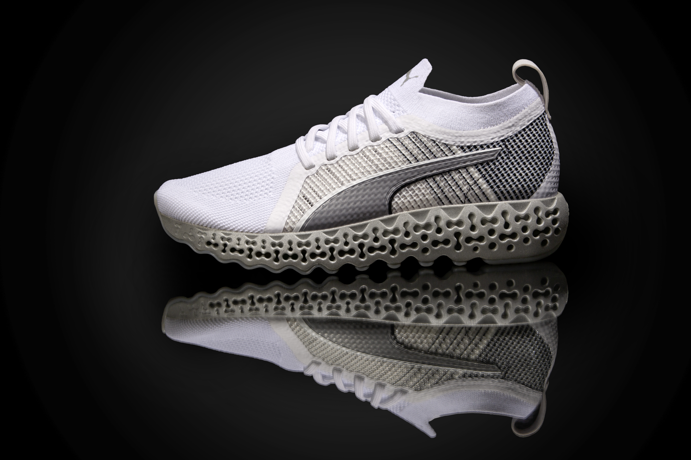

MIT Design Lab
During my time at MIT Design Lab, I contributed to different projects mainly as a computational designer. In the project “Calibrate runner”, I joined the team in the last part of the process in which my principal contribution was the refinement of the FEA simulation by bringing full-in my engineering skills and previous experiences working in energy absorption and crash impacts at my time in Ford Motor Company.
In this project, I realized that could be a better and more accurate way of calculating the stresses and deformations of the midsole via finite element analysis, so I create a new step within the existent workflow of the virtual design-simulation-prototyping. What it was a game-changer was the modification from 2D FEA into a 3D simulation environment capable of analyzing the full phenomena of the midsole giving better and more accurate results for its design and manufacturing.

 

Throughout the project of running and basketball, I use a lot of qualitative and quantitative data, such as plantar distribution and ground reaction forces, for example, to be able to create a set-up environment capable of giving accurate results, it was a back and forward process in which I probably went through hundreds or even thousands of simulations to finally arrive at the desirable set-up.
Some of the biggest challenges in setting this simulation environment up were: the definition of hyperelastic and hyperfoam materials into the FEA software, add all the biomechanical constraints and consideration necessary to make sense of the simulation, and the creation of a 3D mesh capable of detecting the pattern behavior with good accuracy.


This change also helped to speed up the design process, because now was possible to test in a fast and dynamic way different pattern configurations.
Finally, my focus project at the MIT Design Lab was the basketball version of Xetic. A project that is still under NDA and hopefully would be developed inside Puma.
https://design.mit.edu/projects/puma-auxetic-recurve-midsole